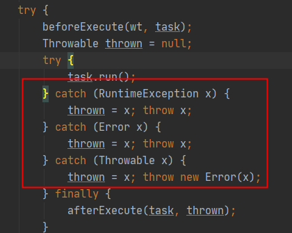

多线程
Thread类
中断
调用线程的interupt方法时：
1）线程阻塞在wait, join, sleep方法时，会抛出InterruptException异常（中断状态会被清除）；
2）线程阻塞在InterruptibleChannel的IO上时，抛出ClosedByInterruptException异常（设置中断状态）；
3）线程阻塞在NIO中Selector中，会立即返回（设置中断状态）；
4）其他情况：设置中断状态
通过信号可以控制另一个线程的动作，比如IO阻塞时仍可以通过调用interrupt退出，此时通过标志（volatile boolean）无法达到效果。
- interrupt()，在一个线程中调用另一个线程的interrupt()方法，即会向那个线程发出信号——线程中断状态已被设置。至于那个线程何去何从，由具体的代码实现决定。
- isInterrupted()，用来判断调用的线程（this）的中断状态(true or false)。
- interrupted()是静态方法，判断当前线程（currentThread）的中断状态并恢复中断状态；
异常
线程中异常应该自己捕获，线程中异常抛出，则线程停止运行，但是不会影响主线程和其它线程；
JVM发现一个线程因未捕获异常而退出，就会把该异常交给Thread对象设置的UncaughtExceptionHandler来处理，比如把没有抓住地异常写入日志。
- 全局的静态方法
Thread::setDefaultUncaughtExceptionHandler； - 实例级的
setUncaughtExceptionHandler的方式，处理子实例线程的异常（执行仍然在子线程中执行），
线程状态
Java语言中线程一共有六种状态，分别是：
-
初始化状态 NEW;
-
可运行/运行状态 RUNNABLE；
-
阻塞状态 BLOCKED；
-
无限时等待状态 WAITING;
-
有限时等待状态 TIMED_WAITING；
-
终止状态 TERMINATED；
Java 把 OS 的可运行与运行状态合一，因为这个语言层面上控制不了；把阻塞状态拆分成三种状态：BLOCKED、WAITING与TIMED_WAITING，对应不同阻塞场景
RUNNABLE与三种阻塞状态的转换
-
RUNNABLE -> BLOCK
-
线程等待synchronized时，当等待线程获取到synchronized隐式锁时，会切回到RUNNABLE状态。
-
需要注意的一个问题是，调用阻塞API时，如IO，Java线程对象的状态不会是BLOCKED。虽然实际上OS会将此线程休眠，等待再次调度。但Java语言层面上感知不到，也不用感知。
-
RUNNABLE -> WAITING
有三种情况会让线程从RUNNABLE切换到WAITING状态：
-
线程获取synchronized后，调用了无参数的Object.wait()方法；
-
线程执行时调用了其他线程的thread.join()方法，等待其他线程结束，再重新变为RUNABLE状态；
-
调用lockSupport.park()方法；
-
RUNNABLE到TIMED_WAITING状态
到TIMED_WAITING与WAITING类似，只是多了一个time参数。具体来说有四种情况：
- 有超时参数的sleep，Thread.sleep(long);
- 有超时参数的wait，Object.wait(long);
-
有超时参数的join，Thread.join(long);
-
有超时参数的LockSupport（为了完整正确，我们不会用到的）；
ThreadLocal
- 一个ThreadLocal实例，只能存储一个对象，通过Thread中的ThreadLocal.ThreadLocalMap保存ThreadLocal 到 value的映射（WeakReference key）；
- 把数据放在Thread对象内，可以保证ThreadLocal与Thread一起被回收；
- 使用ThreadLocal时需要注意线程池中调用ThreadLocal要手动的释放资源；
线程池
ExecutorService
- 线程池的具体实现：ThreadPoolExecutor，ScheduledThreadPoolExecutor
- 工厂类：Executors
shutdown 方法不会等待提交的任务线程结束；
invokeAny：返回任意一个成功结束的任务（即Task没有异常抛出），其它任务会被cancle。可用于分布式判断存在。
invokeAll：启动所有任务，超时时间过后，任务要么完成，要么被取消，可以通过get或者isCancelled被取消；
Future
Future的cancel方法，是通过调用线程的interrupt方法，没有IO阻塞情况或者线程捕获了中断异常，无法取消。
Future的get方法，抛出InterruptedException和ExecutionException（如果Task抛出异常，则会被封装为该异常，通过getCause可以获取任务具体抛出的异常）。
继承ThreadPoolExecutor，可以自定义
- afterExecute(Runnable r, Throwable t) ；
- beforeExecute(Thread t, Runnable r)；
如何等待所有线程结束后再退出?
- 等待足够长的时间，shutdown之后用 awaitTermination ；
- 用 CountdownLatch（已知线程的情况），不需要shutdown；
- 运行期间不结束，等待JVM退出；
避免线程池执行过载
- 防止因任务数过多导致队列中太长，可以通过判断队列长度阈值的方式（>1000），对调用线程进行sleep；
异常处理
线程池在运行Task时，不会对异常做处理，而是直接向上层抛出：

-
在Task代码里，显示进行try-catch；
-
可以通过自定义的
ThreadFactory，为新创建出来的线程设置UncaughtExceptionHandler。
如果Task抛出异常，且没有捕获，对于线程池，会创建新的线程进行执行，不会造成线程池异失败。
ExecutorCompletionService
定义子类实现了FutureTask的done方法，将执行结果添加到BlockingQueue中，提供poll（非阻塞）和take（阻塞）方法获取Future结果。
ThreadPoolExecutor中的invoke机制就是通过该实例实现。
FutureTask 如果执行失败（cancle或其它异常），则会在get时候，抛出ExecutionException。
Phase
线程间同步手段，可重用的同步障。一个任务间需要划分多个阶段，每个阶段需要线程全部完成才继续下一阶段。
Phaser是在线程动态数需要继续执行之前等待的屏障。在CountDownLatch中，该数字无法动态配置，需要在创建实例时提供。
arriveAndAwaitAdvance ：到达该阶段，等待其它到达。
onAdvance：
Fork Join
通过分治算法将问题划分为较小的问题，并递归重复该过程，该问题可以通过Exeuctor进行解决，但为了更高效解决，Java 7引入Fork/Join框架。
工作窃取（work-stealing）算法是指某个线程从其他队列里窃取任务来执行。当任务使用join()方法等待某个子任务结束时，执行该任务的线程会从任务池中选取另一个等待执行的任务并且开始执行。
当大量的任务产生子任务的时候，或者同时当有许多小任务被提交到线程池中的时候，这种处理是非常高效的。
| Call from non-fork/join clients | Call from within fork/join computations | |
|---|---|---|
| Arrange async execution | execute(ForkJoinTask) | ForkJoinTask.fork |
| Await and obtain result | invoke(ForkJoinTask) | ForkJoinTask.invoke |
| Arrange exec and obtain Future | submit(ForkJoinTask) | ForkJoinTask.fork (ForkJoinTasks are Futures) |
ForkJoinTask
- fork() 将子任务发送给Fork/Join执行器。
- join() 当任务完成的时候返回计算结果。
- invoke() 开始执行任务，如果必要，等待计算完成。
子类：
- RecursiveAction 一个递归无结果的ForkJoinTask（没有返回值）
- RecursiveTask 一个递归有结果的ForkJoinTask（有返回值）
- CountedCompleter 作为任务完成时触发另一任务的起点
TODO：CounterCompleter 使用详情了解
限制
- 基本问题的规模不能过大，也不能过小；
- 数据可用前，不应该使用阻塞型IO；
- 不能在任务内抛出校验异常；
工程实践
父进程退出时Kill子进程
通过ProcessBuilder启动JVM，并注册kill父进程时执行的线程(kill子线程)；
通过ProcessBuilder执行shell命令(如再启动java进程），此时通过jps查看会看到两个java进程；如果kill掉父进程，子进程不会随之消亡，若需要，需注册（见下面代码）；
public class TestRunJVM {
public static void main(String[] args) {
ProcessBuilder pb = new ProcessBuilder("jvisualvm");
try {
final Process process = pb.start();
// destroy child process，对于 kill -9 不生效
Runtime.getRuntime().addShutdownHook(new Thread() {
public void run() {
if (process != null) {
process.destroy();
try {
process.waitFor();
} catch (Exception e){
System.out.println("ERROR2" + e.toString());
}
}
}
});
process.waitFor();
} catch (Exception e) {
System.out.println("ERROR" + e.toString());
}
}
}